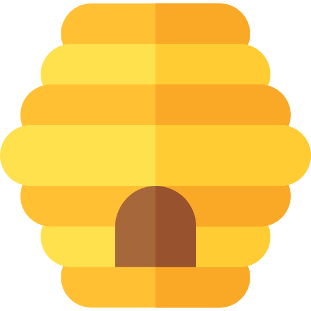

Beary's Breakfast Bar

Beary's has the best porridge! The atmosphere and customer service make you feel like you are sitting in the middle of the woods, eating like a bear! This is exactly the kind of place that I like to return to again and again.
Goldilocks